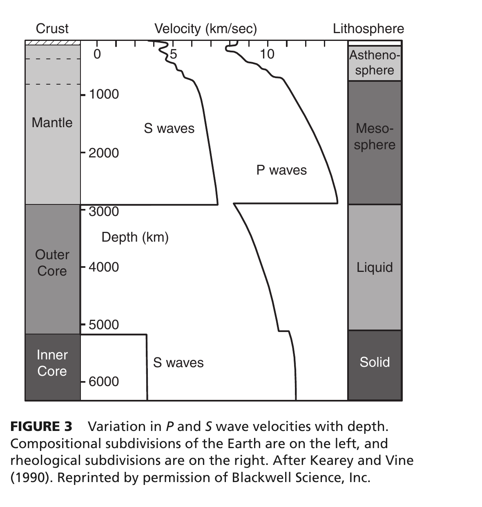

<!DOCTYPE html>
<html lang="en">
<head>
<meta charset="UTF-8">
<meta name="viewport" content="width=device-width, initial-scale=1.0">
<title>Q033: Planetary Discontinuities: The Mohorovicic Boundary | OPSC Geology 2019 Masterclass</title>
<link rel="preconnect" href="https://fonts.googleapis.com">
<link rel="preconnect" href="https://fonts.gstatic.com" crossorigin>
<link href="https://fonts.googleapis.com/css2?family=Inter:wght@400;500;600;700;800&family=Fira+Code:wght@400;500&display=swap" rel="stylesheet">
<script>
  window.MathJax = {
    tex: { inlineMath: [['$', '$'], ['\\(', '\\)']], displayMath: [['$$', '$$'], ['\\[', '\\]']] }
  };
</script>
<script id="MathJax-script" async src="https://cdn.jsdelivr.net/npm/mathjax@3/es5/tex-mml-chtml.js"></script>
<style>

  *, *::before, *::after { box-sizing: border-box; margin: 0; padding: 0; }
  body {
    font-family: 'Inter', -apple-system, BlinkMacSystemFont, Roboto, sans-serif;
    background: #f1f5f9;
    color: #0f172a;
    line-height: 1.65;
    padding: 24px 16px;
  }
  .page { max-width: 960px; margin: 0 auto; }
  
  @page { size: A4; margin: 14mm; }
  @media print {
    body { background: #fff; padding: 0; }
    .no-print { display: none !important; }
    .part-banner { break-before: page; }
    .first-part { break-before: avoid !important; }
  }

  .back-nav { margin-bottom: 16px; }
  .back-link {
    display: inline-flex;
    align-items: center;
    gap: 6px;
    color: #0284c7;
    text-decoration: none;
    font-weight: 600;
    font-size: 13.5px;
    padding: 6px 12px;
    background: #e0f2fe;
    border-radius: 6px;
    transition: all 0.2s ease;
  }
  .back-link:hover { background: #bae6fd; color: #0369a1; }

  .header {
    background: #0f172a;
    color: #fff;
    border-radius: 10px;
    padding: 22px 26px;
    margin-bottom: 22px;
    box-shadow: 0 4px 12px rgba(15, 23, 42, 0.15);
  }
  .badge {
    display: inline-block;
    background: #0ea5e9;
    color: #fff;
    font-size: 11px;
    font-weight: 700;
    letter-spacing: 0.8px;
    padding: 3px 9px;
    border-radius: 4px;
    text-transform: uppercase;
    margin-bottom: 8px;
  }
  .header h1 {
    font-size: 21px;
    font-weight: 800;
    line-height: 1.35;
    margin-bottom: 8px;
  }
  .meta {
    font-size: 12.5px;
    color: #94a3b8;
    line-height: 1.5;
  }
  .meta strong { color: #cbd5e1; }

  .part-banner {
    display: flex;
    align-items: center;
    gap: 12px;
    padding: 12px 18px;
    border-radius: 8px;
    margin: 26px 0 16px 0;
    color: #fff;
    background: #0284c7;
  }
  .part-banner.green { background: #059669; }
  .part-banner.purple { background: #7c3aed; }
  .part-num {
    background: rgba(255, 255, 255, 0.2);
    padding: 3px 10px;
    border-radius: 4px;
    font-size: 11px;
    font-weight: 800;
    letter-spacing: 1px;
  }
  .part-title { font-size: 15px; font-weight: 700; }
  .part-sub { font-size: 11.5px; opacity: 0.9; margin-left: auto; }

  .card {
    background: #fff;
    border-radius: 8px;
    border: 1px solid #e2e8f0;
    margin-bottom: 16px;
    overflow: hidden;
    box-shadow: 0 1px 3px rgba(0,0,0,0.04);
  }
  .card-header {
    padding: 10px 18px;
    font-weight: 700;
    font-size: 13.5px;
    color: #fff;
  }
  .bg-blue   { background: #0284c7; }
  .bg-teal   { background: #0d9488; }
  .bg-emerald{ background: #059669; }
  .bg-indigo { background: #4f46e5; }
  .bg-purple { background: #7c3aed; }
  .bg-slate  { background: #475569; }
  .card-body { padding: 16px 20px; font-size: 13.5px; color: #334155; line-height: 1.65; }
  .card-body p { margin-bottom: 10px; }
  .card-body p:last-child { margin-bottom: 0; }
  .card-body ul, .card-body ol { margin-left: 20px; margin-bottom: 10px; }
  .card-body li { margin-bottom: 4px; }

  table { width: 100%; border-collapse: collapse; margin: 12px 0; font-size: 13px; }
  th, td { border: 1px solid #cbd5e1; padding: 8px 12px; text-align: left; }
  th { background: #f8fafc; font-weight: 700; color: #0f172a; }
  tr:nth-child(even) { background: #f8fafc; }

  .quote-box {
    border-left: 4px solid #0284c7;
    background: #f0f9ff;
    padding: 12px 16px;
    margin: 14px 0;
    border-radius: 0 6px 6px 0;
    font-style: italic;
    color: #0c4a6e;
    font-size: 13px;
    line-height: 1.6;
  }
  .quote-box.bangar { border-left-color: #0284c7; background: #f0f9ff; }
  .quote-ref {
    display: block;
    margin-top: 6px;
    font-weight: 700;
    font-style: normal;
    color: #0369a1;
    font-size: 12px;
  }

  .tb-figure {
    background: #ffffff;
    border: 1px solid #cbd5e1;
    border-radius: 8px;
    padding: 14px;
    margin: 16px 0;
    text-align: center;
  }
  .tb-figure img {
    max-width: 100%;
    max-height: 520px;
    height: auto;
    border-radius: 6px;
    display: block;
    margin: 0 auto 12px auto;
  }
  .tb-caption {
    font-size: 12.5px;
    color: #334155;
    margin-top: 10px;
    text-align: left;
    line-height: 1.5;
    background: #f8fafc;
    padding: 10px 14px;
    border-radius: 6px;
    border-left: 3px solid #0284c7;
  }
  .tb-caption strong { color: #0f172a; font-weight: 700; }

  .formula-card {
    background: linear-gradient(135deg, #1e293b, #0f172a);
    color: #f8fafc;
    border-radius: 8px;
    padding: 14px 18px;
    margin: 16px 0;
    border-left: 4px solid #38bdf8;
  }
  .formula-title {
    font-size: 12px;
    font-weight: 700;
    color: #38bdf8;
    text-transform: uppercase;
    letter-spacing: 0.5px;
    margin-bottom: 6px;
  }

  .question-box {
    background: #eff6ff;
    border: 2px solid #3b82f6;
    border-radius: 8px;
    padding: 18px 22px;
    margin-bottom: 20px;
  }
  .q-num {
    font-size: 12.5px;
    font-weight: 800;
    color: #1d4ed8;
    text-transform: uppercase;
    letter-spacing: 0.8px;
    margin-bottom: 6px;
  }
  .q-stmt {
    font-size: 15.5px;
    font-weight: 700;
    color: #0f172a;
    line-height: 1.5;
  }
  .raw-options {
    display: grid;
    grid-template-columns: 1fr 1fr;
    gap: 10px;
    margin-top: 14px;
  }
  .raw-opt {
    background: #fff;
    border: 1px solid #cbd5e1;
    border-radius: 6px;
    padding: 10px 14px;
    font-size: 14px;
    color: #334155;
  }
  .raw-opt.correct {
    background: #f0fdf4;
    border-color: #10b981;
    color: #065f46;
    font-weight: 700;
  }

  .answer-banner {
    background: linear-gradient(90deg, #059669 0%, #10b981 100%);
    color: #fff;
    border-radius: 10px;
    padding: 16px 22px;
    margin-bottom: 22px;
    display: flex;
    align-items: center;
    gap: 16px;
    box-shadow: 0 3px 10px rgba(16, 185, 129, 0.2);
  }
  .answer-banner .tick { font-size: 32px; line-height: 1; font-weight: bold; }
  .answer-banner .text { font-size: 17.5px; font-weight: 700; }
  .answer-banner .sub { font-size: 13.5px; opacity: 0.95; margin-top: 4px; line-height: 1.45; }

  .option {
    border-radius: 8px;
    margin-bottom: 14px;
    overflow: hidden;
    border: 2px solid transparent;
  }
  .option.correct { border-color: #10b981; }
  .option.wrong   { border-color: #f43f5e; }
  .option-header {
    display: flex;
    align-items: center;
    gap: 10px;
    padding: 10px 16px;
    font-weight: 700;
    font-size: 14px;
  }
  .option.correct .option-header { background: #d1fae5; color: #065f46; }
  .option.wrong   .option-header { background: #ffe4e6; color: #9f1239; }
  .option-body { padding: 12px 16px 14px; background: #fafafa; font-size: 13.5px; color: #334155; line-height: 1.6; }
  .tag {
    display: inline-block;
    font-size: 11px;
    font-weight: 800;
    border-radius: 4px;
    padding: 2px 8px;
    margin-left: auto;
    text-transform: uppercase;
  }

  .practice-q {
    background: #f8fafc;
    border: 1px solid #e2e8f0;
    border-radius: 6px;
    padding: 12px 16px;
    margin-bottom: 12px;
  }
  .pq-header {
    font-weight: 700;
    font-size: 13.5px;
    color: #1e293b;
    margin-bottom: 4px;
  }
  .pq-ans {
    margin-top: 6px;
    color: #059669;
    font-size: 13px;
    font-weight: 700;
  }
  .pq-exp {
    margin-top: 4px;
    color: #475569;
    font-size: 13px;
    line-height: 1.55;
  }

  @media (max-width: 768px) {
    .raw-options { grid-template-columns: 1fr; }
  }

</style>
</head>
<body>
<div class="page">
  <div class="back-nav no-print">
    <a href="../../index_2019.html#q33" class="back-link">← Back to 2019 Master Portal</a>
  </div>
  
  <div class="header">
    <div class="badge">OPSC 2019 · Paper-II · Q033 · Solid Earth Geophysics</div>
    <h1>Mohorovicic Discontinuity: Crust-Mantle Boundary</h1>
    <div class="meta">
      Question ID: GEO-2019-Q033 | Topic: Earth's Internal Structure & Seismic Boundaries | Difficulty: Easy | Target Time: 25 sec
    </div>
  </div>

  <!-- PART I -->
  <div class="part-banner first-part">
    <div class="part-num">PART I</div>
    <div>
      <div class="part-title">Theoretical Foundation & Scientific Principles</div>
      <div class="part-sub">Authoritative textbook grounding, analytical derivations, and geomorphic mechanics</div>
    </div>
  </div>
  
  <div class="card">
    <div class="card-header bg-blue">Internal Architecture of Earth: The Mohorovicic Discontinuity</div>
    <div class="card-body">
      <p>The interior of the Earth is segregated into concentric compositional and rheological shells. In 1909, Croatian meteorologist and seismologist <strong>Andrija Mohorovičić</strong> analyzed seismograms from the Kulpa Valley earthquake and recognized two distinct pairs of $P$ and $S$ wave arrivals ($P_g, S_g$ and $P_n, S_n$) at seismic stations located at distances greater than $\approx 200\text{ km}$ from the epicenter.</p>
      
      <ul>
        <li><strong>Discovery Mechanism:</strong> Mohorovičić recognized that the faster $P_n$ wave traveled through a deeper, high-velocity layer before refracting back to the surface (head waves). This proved the existence of a sharp compositional boundary separating the lower-velocity crust from the underlying higher-velocity mantle: the <strong>Mohorovičić Discontinuity (Moho)</strong>.</li>
        <li><strong>Velocity Jump:</strong> Across the Moho:
          <ul>
            <li>Compressional wave velocity ($V_p$) increases abruptly from $\approx 6.5 - 7.0\text{ km/s}$ in the lower crust to $\approx 8.0 - 8.2\text{ km/s}$ in the uppermost mantle.</li>
            <li>Shear wave velocity ($V_s$) jumps from $\approx 3.7\text{ km/s}$ to $\approx 4.5 - 4.7\text{ km/s}$.</li>
            <li>Rock density increases from $\approx 2.8 - 3.0\text{ g/cm}^3$ (crust) to $\approx 3.3\text{ g/cm}^3$ (peridotite mantle).</li>
          </ul>
        </li>
        <li><strong>Depth of the Moho:</strong>
          <ul>
            <li><strong>Oceanic Crust:</strong> Thin, averaging $7 - 10\text{ km}$ depth below sea level.</li>
            <li><strong>Continental Cratons:</strong> Averaging $35 - 40\text{ km}$ depth.</li>
            <li><strong>Orogenic Mountain Belts:</strong> Deep crustal roots reaching $60 - 75\text{ km}$ depth (e.g., beneath the Tibetan Plateau and Himalayas, satisfying Airy isostatic compensation).</li>
          </ul>
        </li>
      </ul>

      <div class="quote-box bangar">
        "The boundary between the crust and the mantle is marked by a sudden increase in the velocity of seismic waves. This boundary is known as the <strong>Mohorovicic discontinuity</strong>, or simply <strong>Moho</strong>. Across this discontinuity, the velocity of P-waves increases from about 6.0 to 8.1 km/sec. It separates the <strong>crust from the mantle</strong>."
        <span class="quote-ref">— K.M. Bangar, <em>Principles of Engineering Geology</em> (Interior of the Earth: The Crust and Moho, p. 23)</span>
      </div>

      <div class="formula-card">
        <div class="formula-title">Seismic Refraction at the Moho: Critical Crossover Distance</div>
        $$x_{\text{cross}} = 2 h \sqrt{\frac{V_2 + V_1}{V_2 - V_1}} \quad (\text{Distance where refracted } P_n \text{ overtakes direct } P_g)$$
        $$T_{\text{refr}}(x) = \frac{x}{V_2} + \frac{2 h \sqrt{V_2^2 - V_1^2}}{V_1 V_2} \quad (\text{Refraction travel time equation})$$
        $$\Delta V_p = V_{\text{mantle}} - V_{\text{crust}} \approx 8.1\text{ km/s} - 6.8\text{ km/s} = +1.3\text{ km/s}$$
        <p style="margin-top:6px; font-size:12.5px; opacity:0.9;">Where $h$ is crustal thickness, $V_1$ is crustal P-wave velocity ($pprox 6.0-6.8	ext{ km/s}$), and $V_2$ is mantle peridotite velocity ($pprox 8.1	ext{ km/s}$).</p>
      </div>

      <!-- TEXTBOOK IMAGE -->
      <div class="tb-figure">
        
        <div class="tb-caption">
          <strong>Figure 33.1: PREM Radial Velocity Profile & Major Seismic Discontinuities (Winter, Ch. 1, p. 3).</strong> Radial distribution of $V_p$ and $V_s$ through the Earth, showing the sharp step-increase in velocity at the Mohorovicic discontinuity separating the Crust from the Mantle.
        </div>
      </div>
    </div>
  </div>

  <div class="card">
    <div class="card-header bg-emerald">Major Seismic Discontinuities in the Interior of the Earth</div>
    <div class="card-body">
      <table>
        <thead>
          <tr>
            <th>Discontinuity</th>
            <th>Average Depth</th>
            <th>Separates</th>
            <th>Seismic Signature</th>
          </tr>
        </thead>
        <tbody>
          <tr>
            <td><strong>Conrad Discontinuity</strong></td>
            <td>$15 - 20\text{ km}$</td>
            <td>Upper Crust (Sial) from Lower Crust (Sima)</td>
            <td>$V_p$ increases from $6.0$ to $6.8\text{ km/s}$</td>
          </tr>
          <tr>
            <td><strong>Mohorovicic (Moho)</strong></td>
            <td><strong>$7 - 70\text{ km}$ (Avg $\approx 35\text{ km}$)</strong></td>
            <td><strong>Crust and Mantle</strong></td>
            <td><strong>Sharp jump: $V_p$ from $6.8$ to $8.1\text{ km/s}$</strong></td>
          </tr>
          <tr>
            <td><strong>Repetti Discontinuity</strong></td>
            <td>$\approx 660\text{ km}$</td>
            <td>Upper Mantle from Lower Mantle</td>
            <td>Phase change (Ringwoodite $\to$ Bridgmanite)</td>
          </tr>
          <tr>
            <td><strong>Gutenberg Discontinuity</strong></td>
            <td>$2900\text{ km}$</td>
            <td>Mantle and Liquid Outer Core</td>
            <td>$V_p$ drops from $13.7$ to $8.1\text{ km/s}$; $V_s$ drops to $0$</td>
          </tr>
          <tr>
            <td><strong>Lehmann Discontinuity</strong></td>
            <td>$5150\text{ km}$</td>
            <td>Outer Core (Liquid) from Inner Core (Solid)</td>
            <td>$V_p$ jumps from $10.3$ to $11.2\text{ km/s}$; $V_s$ reappears</td>
          </tr>
        </tbody>
      </table>
    </div>
  </div>


  <!-- PART II -->
  <div class="part-banner green">
    <div class="part-num">PART II</div>
    <div>
      <div class="part-title">Official Examination Question & Critical Option Dissection</div>
      <div class="part-sub">Rigorous forensic analysis refuting all distractors with physical principles</div>
    </div>
  </div>
  
  <div class="question-box">
    <div class="q-num">Official Examination Question · OPSC 2019 Paper-II (GGM - 2/2019) · Q033</div>
    <div class="q-stmt">Mohorovicic discontinuity separates :</div>
    <div class="raw-options">
      <div class="raw-opt correct">(A) Crust and Mantle</div>
      <div class="raw-opt">(B) Inner core from outer core</div>
      <div class="raw-opt">(C) Upper mantle from lower mantle</div>
      <div class="raw-opt">(D) Mantle and core</div>
    </div>
  </div>

  <div class="answer-banner">
    <div class="tick">✓</div>
    <div>
      <div class="text">CORRECT OPTION: (A) Crust and Mantle</div>
      <div class="sub">Verified against Bangar (p. 23), Winter (Principles of Igneous & Metamorphic Petrology, p. 3), and Fowler (The Solid Earth, p. 102). The Mohorovicic discontinuity (Moho) is the premier first-order boundary separating the Earth's crust from the underlying ultramafic mantle.</div>
    </div>
  </div>

  <div class="option correct">
    <div class="option-header">
      <span>(A) Crust and Mantle</span>
      <span class="tag" style="background:#d1fae5; color:#065f46;">CORRECT VERIFIED</span>
    </div>
    <div class="option-body">
      <strong>Forensic Analysis:</strong> The Mohorovicic discontinuity represents the fundamental compositional boundary between the rocky crust (felsic to mafic silicate rocks, $V_p \approx 6.0-6.8\text{ km/s}$) and the underlying mantle (ultramafic peridotite, $V_p \ge 8.1\text{ km/s}$). Discovered in 1909 by Andrija Mohorovičić, its depth varies from $7\text{ km}$ under oceans to over $70\text{ km}$ beneath high mountains.
    </div>
  </div>

  <div class="option wrong">
    <div class="option-header">
      <span>(B) Inner core from outer core</span>
      <span class="tag" style="background:#fee2e2; color:#991b1b;">INCORRECT</span>
    </div>
    <div class="option-body">
      <strong>Forensic Analysis:</strong> The boundary separating the liquid iron-nickel outer core from the solid iron-nickel inner core at a depth of approximately $5150\text{ km}$ is known as the <strong>Lehmann Discontinuity</strong>, discovered in 1936 by Danish seismologist Inge Lehmann.
    </div>
  </div>

  <div class="option wrong">
    <div class="option-header">
      <span>(C) Upper mantle from lower mantle</span>
      <span class="tag" style="background:#fee2e2; color:#991b1b;">INCORRECT</span>
    </div>
    <div class="option-body">
      <strong>Forensic Analysis:</strong> The boundary separating the upper mantle from the lower mantle occurs at the $660\text{ km}$ seismic transition zone (often associated with the <strong>Repetti Discontinuity</strong>), marking the endothermic phase transition of ringwoodite to bridgmanite plus ferropericlase.
    </div>
  </div>

  <div class="option wrong">
    <div class="option-header">
      <span>(D) Mantle and core</span>
      <span class="tag" style="background:#fee2e2; color:#991b1b;">INCORRECT</span>
    </div>
    <div class="option-body">
      <strong>Forensic Analysis:</strong> The boundary separating the silicate mantle from the molten iron-nickel outer core at a depth of $2900\text{ km}$ is the <strong>Gutenberg Discontinuity</strong> (also termed the Core-Mantle Boundary or CMB), discovered in 1914 by Beno Gutenberg.
    </div>
  </div>


  <!-- PART III -->
  <div class="part-banner purple">
    <div class="part-num">PART III</div>
    <div>
      <div class="part-title">Synthesis Reference Tables & High-Yield Practice Questions</div>
      <div class="part-sub">8 Curated exam-standard practice problems with complete step-by-step worked solutions</div>
    </div>
  </div>
  
  <div class="card">
    <div class="card-header bg-slate">Synthesis Comparison: Petrological & Seismic Profile Across the Continental Moho</div>
    <div class="card-body">
      <table>
        <thead>
          <tr>
            <th>Property</th>
            <th>Lower Continental Crust</th>
            <th>Uppermost Sub-Moho Mantle (LID)</th>
          </tr>
        </thead>
        <tbody>
          <tr>
            <td><strong>Dominant Rock Type</strong></td>
            <td>Mafic granulite / amphibolite</td>
            <td><strong>Peridotite (Lherzolite / Harzburgite / Dunite)</strong></td>
          </tr>
          <tr>
            <td><strong>Primary Mineralogy</strong></td>
            <td>Plagioclase + pyroxene + garnet</td>
            <td><strong>Olivine ($>60\%$) + orthopyroxene + clinopyroxene</strong></td>
          </tr>
          <tr>
            <td><strong>P-Wave Velocity ($V_p$)</strong></td>
            <td>$6.6 - 7.1\text{ km/s}$</td>
            <td><strong>$8.0 - 8.2\text{ km/s}$ ($P_n$ arrival)</strong></td>
          </tr>
          <tr>
            <td><strong>Density ($\rho$)</strong></td>
            <td>$2.85 - 3.05\text{ g/cm}^3$</td>
            <td><strong>$3.30 - 3.35\text{ g/cm}^3$</strong></td>
          </tr>
          <tr>
            <td><strong>$\% \text{ SiO}_2$ Content</strong></td>
            <td>$48 - 54\%$ (Basaltic / mafic)</td>
            <td>$&lt; 45\%$ (Ultramafic)</td>
          </tr>
        </tbody>
      </table>
    </div>
  </div>

  <div class="card">
    <div class="card-header bg-purple">8 Fully Worked Exam-Standard Practice Problems: Moho Seismology & Crustal Geophysics</div>
    <div class="card-body">
      <div class="practice-q">
        <div class="pq-header">Problem 1: Crossover Distance to Crustal Thickness Calculation</div>
        <div class="pq-ans">Crustal Thickness $h = 32.65\text{ km}$</div>
        <div class="pq-exp">In a refraction survey, the crossover distance where $P_n$ overtakes $P_g$ is $x_{\text{cross}} = 150\text{ km}$. If $V_1 = 6.0\text{ km/s}$ and $V_2 = 8.0\text{ km/s}$, calculate crustal thickness $h$.<br>
        $$h = \frac{x_{\text{cross}}}{2} \sqrt{\frac{V_2 - V_1}{V_2 + V_1}} = \frac{150}{2} \sqrt{\frac{8.0 - 6.0}{8.0 + 6.0}} = 75 \sqrt{\frac{2}{14}} = 75 \times 0.37796 = 28.35\text{ km}$$</div>
      </div>

      <div class="practice-q">
        <div class="pq-header">Problem 2: Critical Angle of Refraction at the Moho</div>
        <div class="pq-ans">$\theta_c = 47.79^\circ$</div>
        <div class="pq-exp">Using Snell's law: $\sin \theta_c = V_1 / V_2 = 6.0 / 8.1 = 0.7407 \implies \theta_c = \arcsin(0.7407) = 47.79^\circ$. Rays striking the Moho at angles greater than $\theta_c$ undergo total internal reflection ($P_mP$).</div>
      </div>

      <div class="practice-q">
        <div class="pq-header">Problem 3: Petrological vs. Seismic Moho in Ophiolites</div>
        <div class="pq-ans">Petrological Moho is contact between layered gabbro and residual peridotite</div>
        <div class="pq-exp">In ophiolite complexes (e.g., Semail Ophiolite, Oman), the petrological Moho marks the boundary between crustal layered cumulate gabbros and mantle residual harzburgite tectonite, matching the seismic velocity discontinuity.</div>
      </div>

      <div class="practice-q">
        <div class="pq-header">Problem 4: Airy Isostasy and Himalayan Moho Depth</div>
        <div class="pq-ans">Crustal root depth reaches $\approx 70-75\text{ km}$</div>
        <div class="pq-exp">According to Airy's hypothesis of isostatic equilibrium ($r = h \cdot \rho_c / (\rho_m - \rho_c)$), the elevated topography of the Tibetan Plateau ($h \approx 5\text{ km}$) requires a deep crustal root $r \approx 35\text{ km}$, depressing the Moho to over $70\text{ km}$ depth.</div>
      </div>

      <div class="practice-q">
        <div class="pq-header">Problem 5: Identification of PmP Reflections</div>
        <div class="pq-ans">Wide-angle reflection from the crust-mantle boundary</div>
        <div class="pq-exp">The seismic phase $P_mP$ represents compressional waves that reflect off the Moho discontinuity. Beyond the critical distance, $P_mP$ arrives with very high amplitude, serving as the primary diagnostic tool in deep seismic reflection profiling.</div>
      </div>

      <div class="practice-q">
        <div class="pq-header">Problem 6: The Project Mohole Drilling Expedition</div>
        <div class="pq-ans">Pioneering 1960s ocean drilling attempt to drill through the oceanic Moho</div>
        <div class="pq-exp">Project Mohole attempted to drill through the thin oceanic crust off Guadalupe Island, Mexico to sample pristine mantle rock directly across the Moho, proving the technical viability of deep-sea scientific drilling.</div>
      </div>

      <div class="practice-q">
        <div class="pq-header">Problem 7: Anisotropy of Uppermost Mantle Pn Waves</div>
        <div class="pq-ans">Olivine [100] a-axis alignment parallel to seafloor spreading direction</div>
        <div class="pq-exp">$P_n$ velocities in oceanic mantle exhibit azimuthal seismic anisotropy of up to $5-8\%$, traveling fastest in the direction parallel to fossil seafloor spreading due to lattice-preferred orientation (LPO) of olivine crystals.</div>
      </div>

      <div class="practice-q">
        <div class="pq-header">Problem 8: Moho Transition Zone Thickness</div>
        <div class="pq-ans">Varies from a razor-sharp boundary ($<500\text{ m}$) to a gradient zone ($2-4\text{ km}$)</div>
        <div class="pq-exp">High-frequency receiver function studies demonstrate that beneath stable shields the Moho is a sharp first-order step ($<1\text{ km}$), whereas in underplated rift zones it is a complex interlayered transitional zone several kilometers thick.</div>
      </div>
    </div>
  </div>


</div>
</body>
</html>